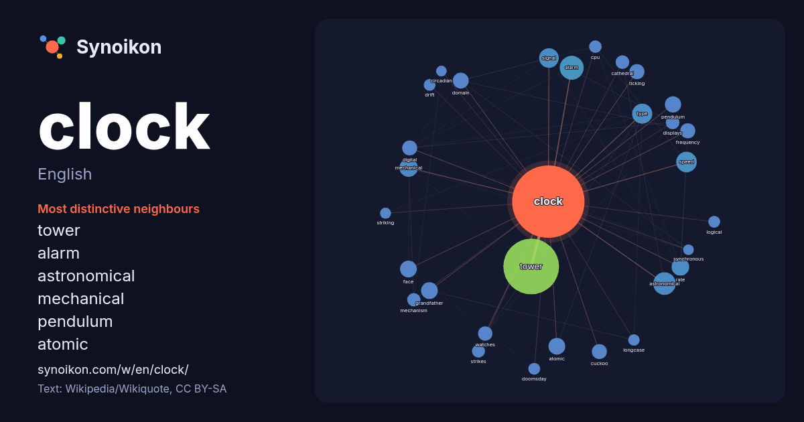

English · word of the day list
clock
The words found around it in 2014 instances from English Wikipedia, Wikiquote and Hacker News.

Most distinctive neighbours
- tower 178×
- alarm 58×
- astronomical 51×
- mechanical 30×
- pendulum 29×
- atomic 28×
- signal 28×
- speed 27×
- grandfather 26×
- ticking 25×
- cuckoo 25×
- domain 21×
- frequency 19×
- watches 17×
- cpu 17×
- rate 17×
- face 17×
- type 16×
- doomsday 16×
- drift 15×
× = how many times more often than in general English Wikipedia text.
Most frequent neighbours
- tower 330
- alarm 61
- astronomical 54
- speed 45
- type 43
- signal 41
- located 40
- mechanical 36
- rate 33
- company 32
- atomic 30
- face 30
- grandfather 30
- set 30
- world 30
- pendulum 28
- domain 27
- american 24
- cuckoo 24
- digital 24
In context
- A clock or chronometer is a device that measures and displays time. The clock is one of the oldest human inventions, meeting the need to measure intervals Wikipedia snippets · Clock
- CLOCK (backronym for circadian locomotor output cycles kaput) is a gene encoding a basic helix-loop-helix-PAS transcription factor that is known to affect Wikipedia snippets · CLOCK
- The Clock or The Clocks may refer to: The Clock (1917 film), a silent American film The Clock (1945 film), an American film The Clock (2010 film), a 24-hour Wikipedia snippets · The Clock
- A clock is an instrument for measuring time. Clock, CLOCK, or Clocks may also refer to: Clock (American Wikipedia snippets · Clock (disambiguation)
- The Doomsday Clock is a symbol that represents the estimated likelihood of a human-made global catastrophe, in the opinion of the nonprofit organization Wikipedia snippets · Doomsday Clock
- A circadian clock, or circadian oscillator, also known as one's internal alarm clock, is a biochemical oscillator that cycles with a stable phase and is Wikipedia snippets · Circadian clock
- Clock recovery is a process in serial communication used to extract timing information from a stream of serial data being sent in order to accurately Wikipedia snippets · Clock recovery
- of advancing clocks to (in theory) make better use of the longer daylight available during summer by having darkness fall at a later clock time. The typical Wikipedia snippets · Daylight saving time
More English words
- art
- autumn
- bell
- bread
- bridge
- cat
- city
- climate
- death
- desert
- dog
- family
- food
- forest
- garden
- god
- gold
- health
- heart
- history
- honey
- horse
- island
- language
- life
- map
- mirror
- money
- mother
- mountain
- nature
- power
- rain
- road
- salt
- science
- shadow
- silence
- song
- star
- storm
- summer
- tea
- time
- train
- truth
- water
- winter
- work
Precomputed on 2026-10-09 with default settings (±5 words, medium corpus). The interactive map can refresh it with live data.